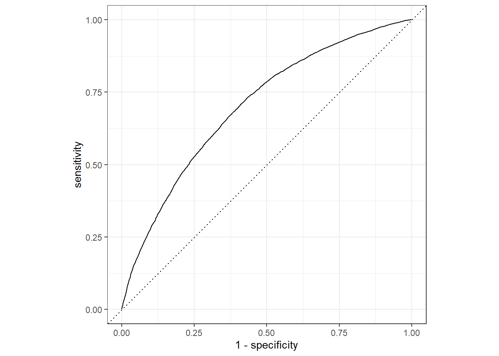
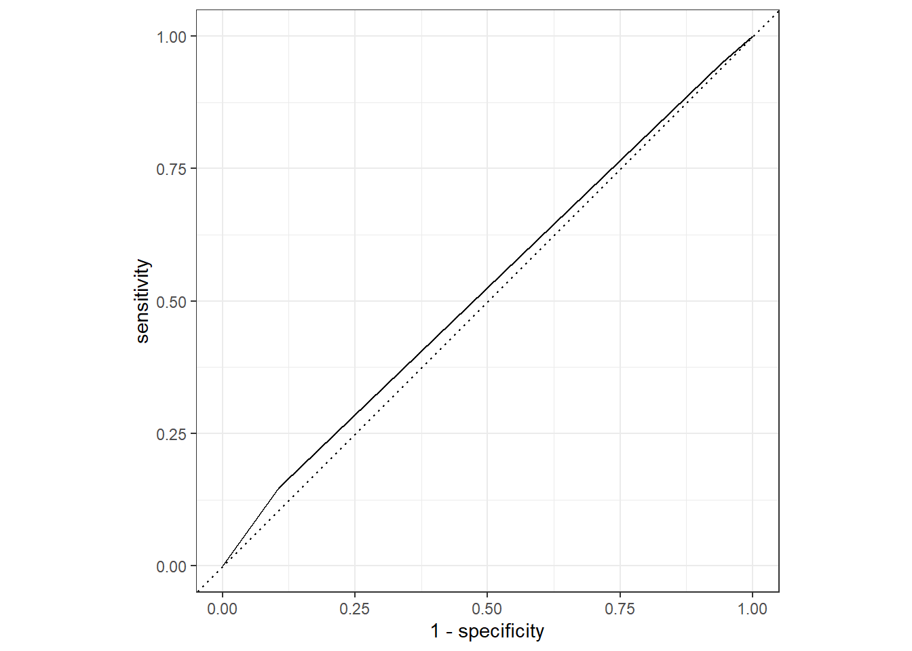

library(here)
library(tidyverse)
library(tidymodels)
library(performance)
library(dplyr)
library(skimr)Model Evaluation
Loading necessary packages
Loading previously processed data
#Path to data.
data_location <- here::here("data","processed_data","processeddata.rds")
#load data
mydata <- readRDS(data_location)Ensure we are ignoring the NA values in the dataset
mydata <- na.omit(mydata)Data splitting
- Here, we are splitting our data into two subsets. 3/4 for the training and 1/4 for test.
# To maintain reproducible results when re-done.
set.seed(1234)
# Proceeding with 75% for training and 25% for test data
split <- initial_split(mydata, prop = 3/4)Dataframe for the training and test data
train_data <- training(split)
test_data <- testing(split)- Training data set now contains 80235 observations while test data contains 26745.
Workflow creation and model fitting
FULL MODEL: Creating recipe that fits a logistic model with flu_vaccine as the outcome and all the predictors of interest in the data
# Outcome is flu_vaccine. The rest of variables are our predictors of interest
# Recipe #1: flu_vaccine predicted by all predictors of interest
flu_rec <- recipe(flu_vaccine ~ age + sex + race + hispanic + education + fam_income + asthma + cancer + chd + smoking_status+ alcohol_status, data = train_data)
# Model: logistic regression using GLM engine
flu_mod <- logistic_reg() %>%
set_engine("glm")
# Workflow: Pairing model and recipe
flu_workflow <- workflow() %>%
add_model(flu_mod) %>%
add_recipe(flu_rec)
# Pring workflow
flu_workflow══ Workflow ════════════════════════════════════════════════════════════════════
Preprocessor: Recipe
Model: logistic_reg()
── Preprocessor ────────────────────────────────────────────────────────────────
0 Recipe Steps
── Model ───────────────────────────────────────────────────────────────────────
Logistic Regression Model Specification (classification)
Computational engine: glm # Fitting the model to a training dataset
flu_fit <-
flu_workflow %>%
fit(data = train_data)
# Looking at the model output
flu_fit %>%
extract_fit_parsnip() %>%
tidy()# A tibble: 20 × 5
term estimate std.error statistic p.value
<chr> <dbl> <dbl> <dbl> <dbl>
1 (Intercept) -2.23 0.0437 -51.1 0
2 age 0.0304 0.000500 60.8 0
3 sexfemale 0.348 0.0155 22.5 1.54e-112
4 raceblack -0.228 0.0239 -9.53 1.50e- 21
5 racenative american 0.256 0.0732 3.50 4.64e- 4
6 raceasian 0.131 0.0333 3.94 8.22e- 5
7 hispanichispanic -0.193 0.0245 -7.89 3.13e- 15
8 educationhigh_school 0.00194 0.0292 0.0667 9.47e- 1
9 educationsome_college 0.166 0.0288 5.78 7.38e- 9
10 educationbachelor 0.383 0.0315 12.2 3.75e- 34
11 educationgraduate 0.651 0.0347 18.8 1.24e- 78
12 fam_income$50,000-$99,999 0.130 0.0187 6.95 3.60e- 12
13 fam_income$100,000+ 0.357 0.0211 16.9 4.42e- 64
14 asthmayes 0.333 0.0223 14.9 1.58e- 50
15 canceryes 0.284 0.0266 10.7 1.21e- 26
16 chdyes 0.493 0.0374 13.2 1.13e- 39
17 smoking_statusformer_smoker 0.0668 0.0192 3.49 4.87e- 4
18 smoking_statussmoker -0.382 0.0230 -16.6 4.22e- 62
19 alcohol_statusformer_drinker 0.0472 0.0281 1.68 9.31e- 2
20 alcohol_statusdrinker -0.0322 0.0225 -1.43 1.53e- 1FULL MODEL: USING trained workflow to predict unseen test data
# Using the trained workflow (flu_fit) to predict with the unseen test data
predict(flu_fit, test_data)# A tibble: 26,745 × 1
.pred_class
<fct>
1 no
2 yes
3 no
4 no
5 yes
6 no
7 no
8 yes
9 no
10 yes
# ℹ 26,735 more rows# Using argument() with the model plus test data for saving them together
flu_aug <-
augment(flu_fit, test_data)
flu_aug %>%
select(flu_vaccine, .pred_no, .pred_yes)# A tibble: 26,745 × 3
flu_vaccine .pred_no .pred_yes
<fct> <dbl> <dbl>
1 no 0.675 0.325
2 yes 0.317 0.683
3 no 0.549 0.451
4 no 0.689 0.311
5 yes 0.406 0.594
6 no 0.644 0.356
7 no 0.665 0.335
8 yes 0.492 0.508
9 no 0.809 0.191
10 no 0.273 0.727
# ℹ 26,735 more rows# Plotting ROC curve
flu_aug %>%
roc_curve(truth = flu_vaccine, .pred_no) %>%
autoplot()
# Using roc_auc() to get the estimates
flu_aug %>%
roc_auc(truth = flu_vaccine, .pred_no)# A tibble: 1 × 3
.metric .estimator .estimate
<chr> <chr> <dbl>
1 roc_auc binary 0.701ALTERNATIVE MODEL: Outcome is still flu_vaccine and predictor is race
# Using flu_vaccine as a categorical outcome of interest and race as main predictor
flu_rec2 <- recipe(flu_vaccine ~ race, data = train_data)
# Fitting the logistic model
flu_mod2 <- logistic_reg() %>%
set_engine("glm")
# Modelling workflow for pairing model and recipe
flu_workflow2 <- workflow() %>%
add_model(flu_mod2) %>%
add_recipe(flu_rec2)
flu_workflow2══ Workflow ════════════════════════════════════════════════════════════════════
Preprocessor: Recipe
Model: logistic_reg()
── Preprocessor ────────────────────────────────────────────────────────────────
0 Recipe Steps
── Model ───────────────────────────────────────────────────────────────────────
Logistic Regression Model Specification (classification)
Computational engine: glm # Using the resulting predictors for preparing recipe and training the model
flu_fit2 <-
flu_workflow2 %>%
fit(data = train_data)
# Pulling the fitted model object and using tidy() function for getting a tidy tibble of model coefficients
flu_fit2 %>%
extract_fit_parsnip() %>%
tidy()# A tibble: 4 × 5
term estimate std.error statistic p.value
<chr> <dbl> <dbl> <dbl> <dbl>
1 (Intercept) -0.152 0.00787 -19.2 1.51e-82
2 raceblack -0.344 0.0220 -15.6 7.25e-55
3 racenative american -0.122 0.0690 -1.77 7.69e- 2
4 raceasian 0.0964 0.0310 3.11 1.86e- 3ALTERNATIVE MODEL: USING TRAINED WORKFLOW TO PREDICT
# Using the trained data to predict with the unseen test data
predict(flu_fit2, test_data)# A tibble: 26,745 × 1
.pred_class
<fct>
1 no
2 no
3 no
4 no
5 no
6 no
7 no
8 no
9 no
10 no
# ℹ 26,735 more rows# Using argument() with the model plus test data for saving them together
flu_aug2 <-
augment(flu_fit2, test_data)
flu_aug2 %>%
select(flu_vaccine, .pred_no, .pred_yes)# A tibble: 26,745 × 3
flu_vaccine .pred_no .pred_yes
<fct> <dbl> <dbl>
1 no 0.514 0.486
2 yes 0.538 0.462
3 no 0.538 0.462
4 no 0.538 0.462
5 yes 0.538 0.462
6 no 0.538 0.462
7 no 0.538 0.462
8 yes 0.621 0.379
9 no 0.621 0.379
10 no 0.538 0.462
# ℹ 26,735 more rows# Creating ROC curve and piping to the autoplot() method
flu_aug2 %>%
roc_curve(truth = flu_vaccine, .pred_no) %>%
autoplot()
# Estimating the area under the curve
flu_aug2 %>%
roc_auc(truth = flu_vaccine, .pred_no)# A tibble: 1 × 3
.metric .estimator .estimate
<chr> <chr> <dbl>
1 roc_auc binary 0.523Given this result, the full model using all variables of interest as predictors perform better the reduced model with only race as predictor. The full model as a ROC-AUC of 0.70 compared the reduced model with ROC-AUC of 0.53